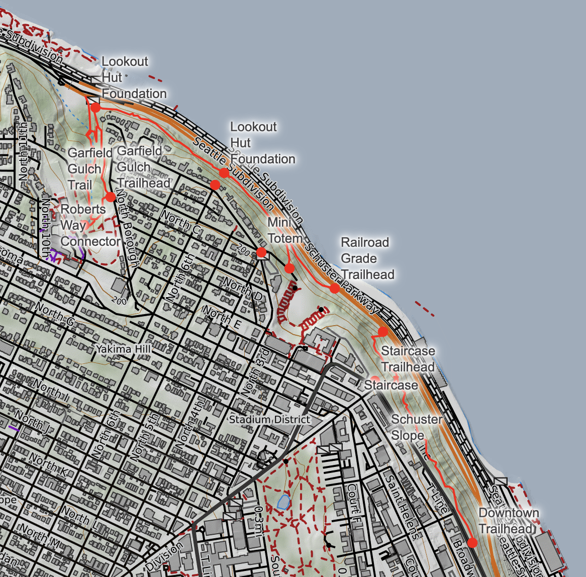
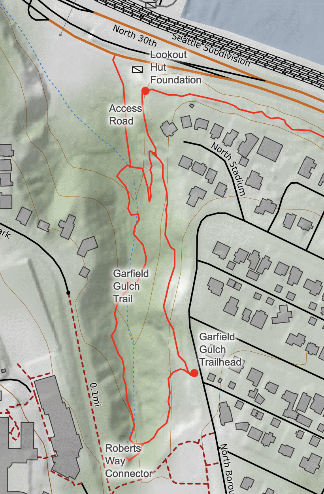

Home
Original Content (Unabridged)
Bayside Trails
The Bayside Trails were built by the City of Tacoma. The 2.3 mile trail system opened in 1975. They continue to exist today, though the city has closed approximately 2/3 of the trail system. The trails run from downtown to Old Town along the waterfront.
Garfield Gulch
The Garfield Gulch section of the trails is open. It’s owned by Parks Tacoma. You can hike it today. There is access from a trailhead nearby Garfield Park as well as an access road along Schuster Parkway.
An interactive map is available here.
Original Images


